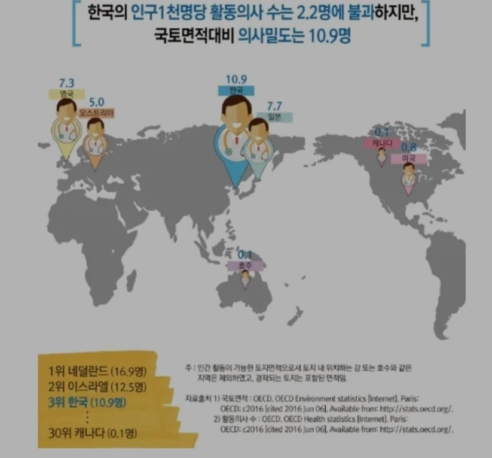

인구와 연관된 지표인 살인률, 출생률같이 의료인수도 총인구 기준으로 해야하는데 국토 면적당 의사수를 끌고옴
지구 영토크기 2위 캐나다랑 비교를 쳐하고 앉았노
지들 필요할땐 의료인 통계에 한의사까지 끌어들이는 의협답다

인구와 연관된 지표인 살인률, 출생률같이 의료인수도 총인구 기준으로 해야하는데 국토 면적당 의사수를 끌고옴
지구 영토크기 2위 캐나다랑 비교를 쳐하고 앉았노
지들 필요할땐 의료인 통계에 한의사까지 끌어들이는 의협답다
닥터X
면적당 개발자 수 한번 해보자 ㅋㅋㅋ
인구밀도가 높은 나라니 의사밀도가 높은 것도 당연하잖아
의사는 뭐 시민들을 바보라 생각하나
그럼 태백산맥 각 봉우리마다 의사 한명씩 배치해줄까